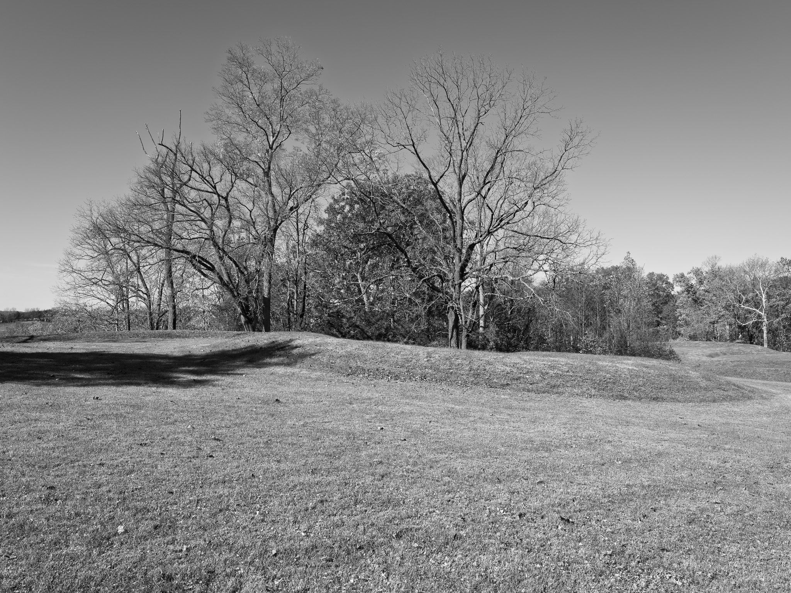
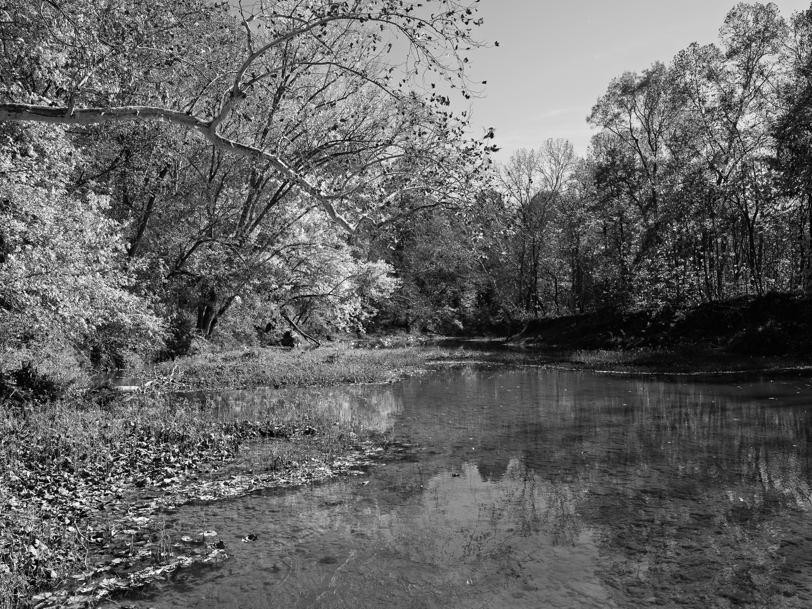
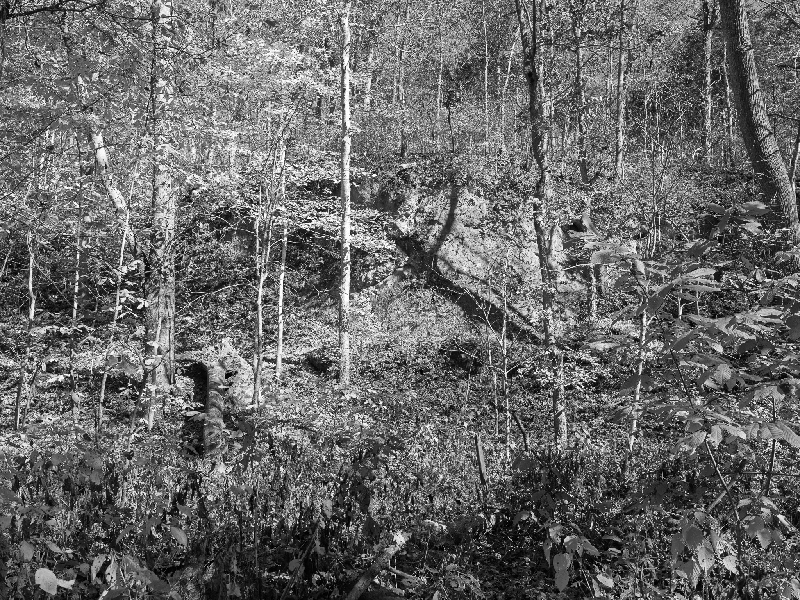
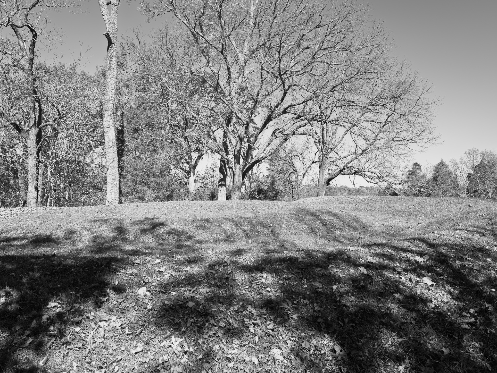
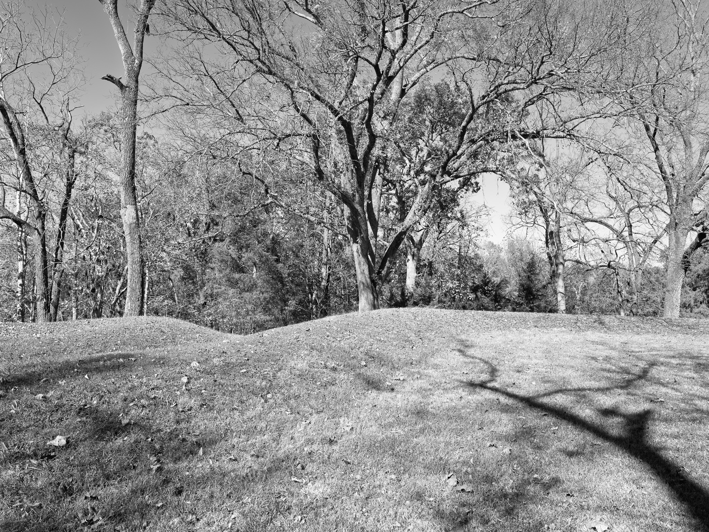

A 60-acre Ohio History Connection memorial holding the Serpent Mound effigy, preserved because Frederic Ward Putnam bought it in 1886 to excavate it.





These photographs are in the public domain (CC0 1.0). No permission is required. No credit is required.
Optional credit line: Public Lands Institute, publiclandsinstitute.net/sites/serpent-mound.html
To tell PLI where an image was used, write to contact@publiclandsinstitute.net.